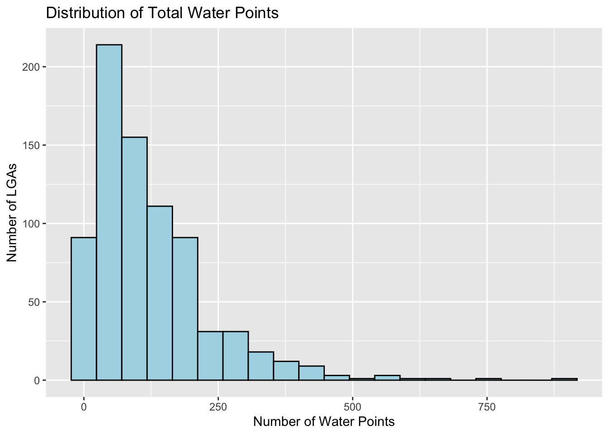
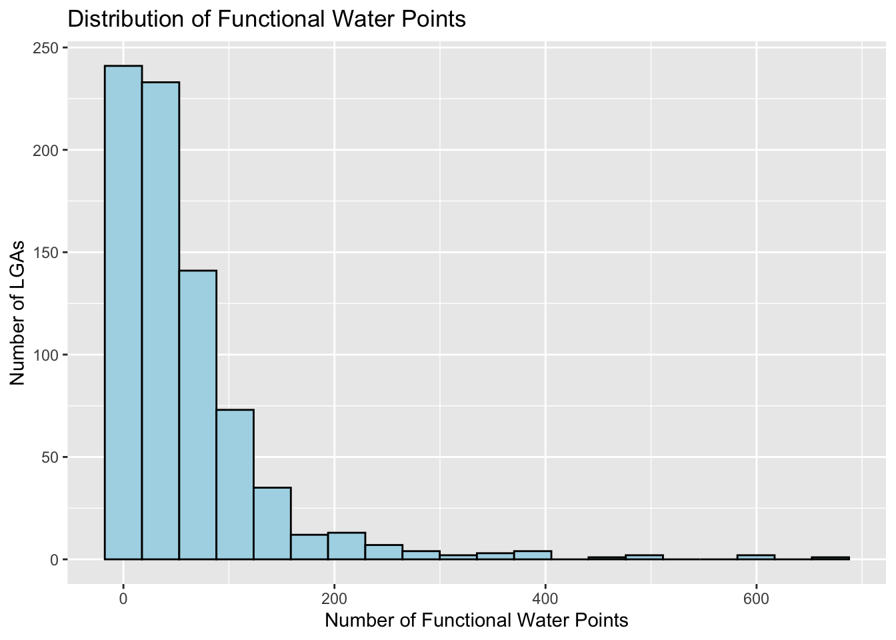
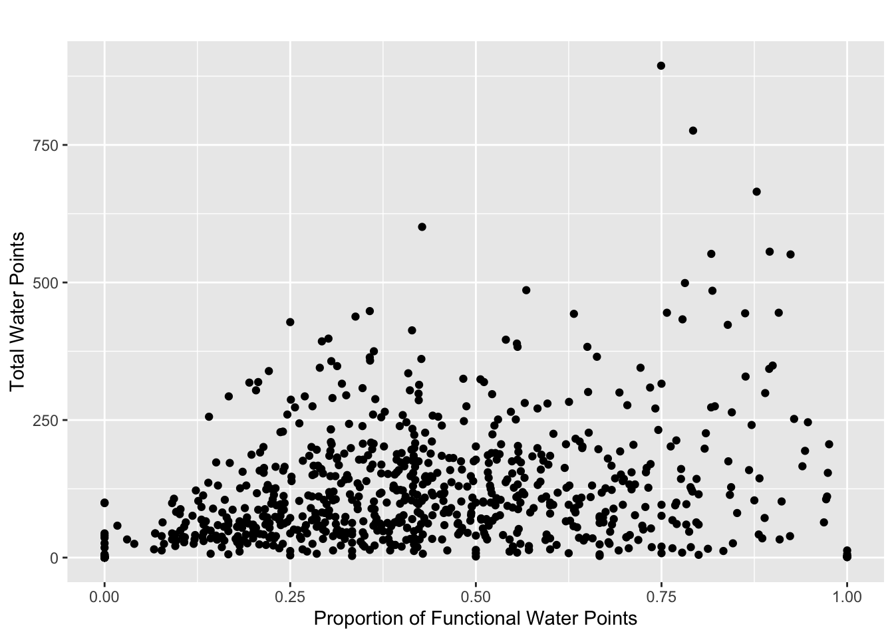
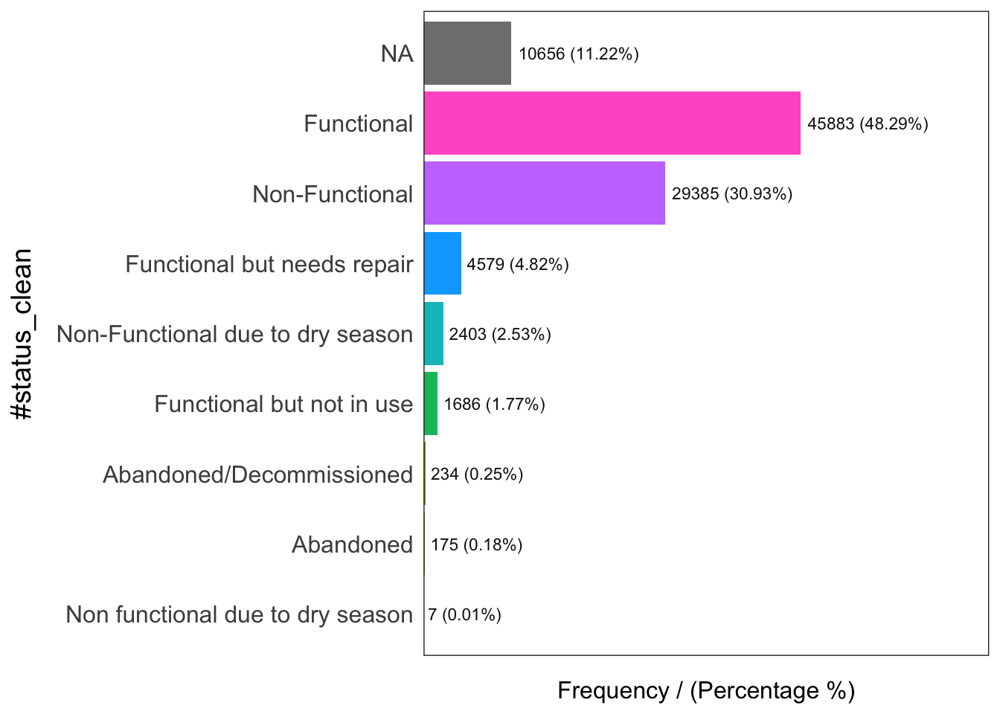
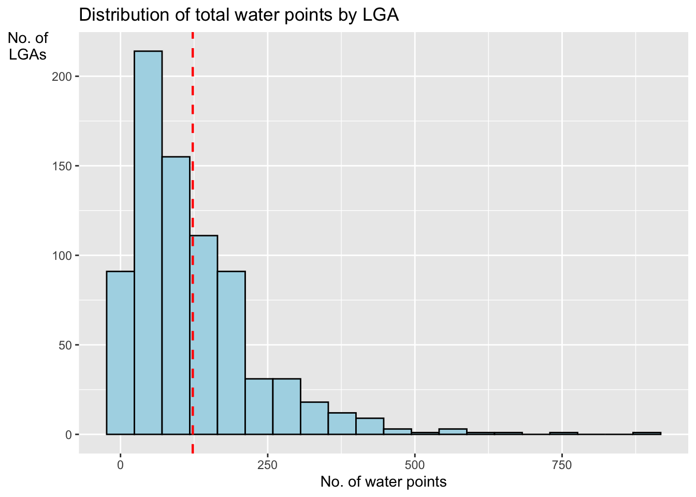

pacman::p_load(sf, tidyverse, funModeling)In-Class Exercise 2
Check if / install relevant packages
Import Geospatial Data
GeoBoundaries data set
geoNGA = st_read(dsn = "data/geospatial",
layer = "geoBoundaries-NGA-ADM2") %>%
st_transform(crs = 26392)Reading layer `geoBoundaries-NGA-ADM2' from data source
`/Users/michelle/Desktop/IS415/shelle-mim/IS415-GAA/In-class_Exercise/Wk2/data/geospatial'
using driver `ESRI Shapefile'
Simple feature collection with 774 features and 5 fields
Geometry type: MULTIPOLYGON
Dimension: XY
Bounding box: xmin: 2.668534 ymin: 4.273007 xmax: 14.67882 ymax: 13.89442
Geodetic CRS: WGS 84head(geoNGA, n=3)Simple feature collection with 3 features and 5 fields
Geometry type: MULTIPOLYGON
Dimension: XY
Bounding box: xmin: 538408.1 ymin: 116360.7 xmax: 1248985 ymax: 1079710
Projected CRS: Minna / Nigeria Mid Belt
shapeName Level shapeID shapeGroup shapeType
1 Aba North ADM2 NGA-ADM2-72505758B79815894 NGA ADM2
2 Aba South ADM2 NGA-ADM2-72505758B67905963 NGA ADM2
3 Abadam ADM2 NGA-ADM2-72505758B57073987 NGA ADM2
geometry
1 MULTIPOLYGON (((548795.5 11...
2 MULTIPOLYGON (((541412.3 12...
3 MULTIPOLYGON (((1248985 104...NGA data set
NGA <- st_read("data/geospatial/",
layer = "nga_admbnda_adm2") %>%
st_transform(crs = 26392) # transform to PCS of NigeriaReading layer `nga_admbnda_adm2' from data source
`/Users/michelle/Desktop/IS415/shelle-mim/IS415-GAA/In-class_Exercise/Wk2/data/geospatial'
using driver `ESRI Shapefile'
Simple feature collection with 774 features and 16 fields
Geometry type: MULTIPOLYGON
Dimension: XY
Bounding box: xmin: 2.668534 ymin: 4.273007 xmax: 14.67882 ymax: 13.89442
Geodetic CRS: WGS 84head(NGA, n=3)Simple feature collection with 3 features and 16 fields
Geometry type: MULTIPOLYGON
Dimension: XY
Bounding box: xmin: 538408.1 ymin: 116360.7 xmax: 1248985 ymax: 1079710
Projected CRS: Minna / Nigeria Mid Belt
Shape_Leng Shape_Area ADM2_EN ADM2_PCODE ADM2_REF ADM2ALT1EN ADM2ALT2EN
1 0.2370744 0.001523921 Aba North NG001001 Aba North <NA> <NA>
2 0.2624772 0.003531104 Aba South NG001002 Aba South <NA> <NA>
3 3.0753158 0.326867840 Abadam NG008001 Abadam <NA> <NA>
ADM1_EN ADM1_PCODE ADM0_EN ADM0_PCODE date validOn validTo
1 Abia NG001 Nigeria NG 2016-11-29 2019-04-17 <NA>
2 Abia NG001 Nigeria NG 2016-11-29 2019-04-17 <NA>
3 Borno NG008 Nigeria NG 2016-11-29 2019-04-17 <NA>
SD_EN SD_PCODE geometry
1 Abia South NG00103 MULTIPOLYGON (((548795.5 11...
2 Abia South NG00103 MULTIPOLYGON (((547286.1 11...
3 Borno North NG00802 MULTIPOLYGON (((1248985 104...Import Aspatial Data
wp_nga <- read_csv("data/aspatial/WPDEx.csv") %>%
filter(`#clean_country_name` == "Nigeria") #remove irrelavent data, keep the data small# Write to RDS format
saveRDS(wp_nga, file = "data/aspatial/wpa_nga.rds")Convert Aspatial to Geospatial
# use log and lat to make georeference col
wp_nga$Geometry = st_as_sfc(wp_nga$`New Georeferenced Column`)
head(wp_nga)# A tibble: 6 × 71
row_id #sour…¹ #lat_…² #lon_…³ #repo…⁴ #stat…⁵ #wate…⁶ #wate…⁷ #wate…⁸ #wate…⁹
<dbl> <chr> <dbl> <dbl> <chr> <chr> <chr> <chr> <chr> <chr>
1 429068 GRID3 7.98 5.12 08/29/… Unknown <NA> <NA> Tapsta… Tapsta…
2 222071 Federa… 6.96 3.60 08/16/… Yes Boreho… Well Mechan… Mechan…
3 160612 WaterA… 6.49 7.93 12/04/… Yes Boreho… Well Hand P… Hand P…
4 160669 WaterA… 6.73 7.65 12/04/… Yes Boreho… Well <NA> <NA>
5 160642 WaterA… 6.78 7.66 12/04/… Yes Boreho… Well Hand P… Hand P…
6 160628 WaterA… 6.96 7.78 12/04/… Yes Boreho… Well Hand P… Hand P…
# … with 61 more variables: `#facility_type` <chr>,
# `#clean_country_name` <chr>, `#clean_adm1` <chr>, `#clean_adm2` <chr>,
# `#clean_adm3` <chr>, `#clean_adm4` <chr>, `#install_year` <dbl>,
# `#installer` <chr>, `#rehab_year` <lgl>, `#rehabilitator` <lgl>,
# `#management_clean` <chr>, `#status_clean` <chr>, `#pay` <chr>,
# `#fecal_coliform_presence` <chr>, `#fecal_coliform_value` <dbl>,
# `#subjective_quality` <chr>, `#activity_id` <chr>, `#scheme_id` <chr>, …wp_sf <- st_sf(wp_nga, crs=4326)
wp_sfSimple feature collection with 95008 features and 70 fields
Geometry type: POINT
Dimension: XY
Bounding box: xmin: 2.707441 ymin: 4.301812 xmax: 14.21828 ymax: 13.86568
Geodetic CRS: WGS 84
# A tibble: 95,008 × 71
row_id `#source` #lat_…¹ #lon_…² #repo…³ #stat…⁴ #wate…⁵ #wate…⁶ #wate…⁷
* <dbl> <chr> <dbl> <dbl> <chr> <chr> <chr> <chr> <chr>
1 429068 GRID3 7.98 5.12 08/29/… Unknown <NA> <NA> Tapsta…
2 222071 Federal Minis… 6.96 3.60 08/16/… Yes Boreho… Well Mechan…
3 160612 WaterAid 6.49 7.93 12/04/… Yes Boreho… Well Hand P…
4 160669 WaterAid 6.73 7.65 12/04/… Yes Boreho… Well <NA>
5 160642 WaterAid 6.78 7.66 12/04/… Yes Boreho… Well Hand P…
6 160628 WaterAid 6.96 7.78 12/04/… Yes Boreho… Well Hand P…
7 160632 WaterAid 7.02 7.84 12/04/… Yes Boreho… Well Hand P…
8 642747 Living Water … 7.33 8.98 10/03/… Yes Boreho… Well Mechan…
9 642456 Living Water … 7.17 9.11 10/03/… Yes Boreho… Well Hand P…
10 641347 Living Water … 7.20 9.22 03/28/… Yes Boreho… Well Hand P…
# … with 94,998 more rows, 62 more variables: `#water_tech_category` <chr>,
# `#facility_type` <chr>, `#clean_country_name` <chr>, `#clean_adm1` <chr>,
# `#clean_adm2` <chr>, `#clean_adm3` <chr>, `#clean_adm4` <chr>,
# `#install_year` <dbl>, `#installer` <chr>, `#rehab_year` <lgl>,
# `#rehabilitator` <lgl>, `#management_clean` <chr>, `#status_clean` <chr>,
# `#pay` <chr>, `#fecal_coliform_presence` <chr>,
# `#fecal_coliform_value` <dbl>, `#subjective_quality` <chr>, …Projection Transformation
# Transform to appropriate projected coordinate system of Nigeria
wp_sf <- wp_sf %>%
st_transform(crs = 26392)Data Cleaning
Select relavent cols
NGA <- NGA %>%
select(c(3:4, 8:9)) # c => column, select cols 3-4 and 8-9Check for duplicate name
NGA$ADM2_EN[duplicated(NGA$ADM2_EN)==TRUE][1] "Bassa" "Ifelodun" "Irepodun" "Nasarawa" "Obi" "Surulere"=> shows LGAs with the same name
duplicated_LGA <- NGA$ADM2_EN[duplicated(NGA$ADM2_EN)==TRUE]
duplicated_indices <- which(NGA$ADM2_EN %in% duplicated_LGA)
for (ind in duplicated_indices) {
NGA$ADM2_EN[ind] <- paste(NGA$ADM2_EN[ind], NGA$ADM1_EN[ind], sep=", ")
}Derive Proportion of Functional & Non Functional Water Points
# Get different status of water points
unique(wp_sf$`#status_clean`)[1] NA "Functional"
[3] "Abandoned/Decommissioned" "Non-Functional"
[5] "Functional but not in use" "Functional but needs repair"
[7] "Abandoned" "Non functional due to dry season"
[9] "Non-Functional due to dry season"# Get functional & non functional water points
functional <- wp_sf %>% filter(`#status_clean` == "Functional")
WP_Functional <- lengths(st_intersects(geoNGA, functional))
non_functional <- wp_sf %>% filter(`#status_clean` == "Non-Functional")
WP_Non_Functional <- lengths(st_intersects(geoNGA, non_functional))glimpse(functional)Rows: 45,883
Columns: 71
$ row_id <dbl> 222071, 47618, 31962, 48031, 31890, 3347…
$ `#source` <chr> "Federal Ministry of Water Resources, Ni…
$ `#lat_deg` <dbl> 6.964532, 4.853210, 4.670585, 5.550722, …
$ `#lon_deg` <dbl> 3.597668, 6.643272, 7.762312, 6.591315, …
$ `#report_date` <chr> "08/16/2015 12:00:00 AM", "02/18/2015 12…
$ `#status_id` <chr> "Yes", "Yes", "Yes", "Yes", "Yes", "Yes"…
$ `#water_source_clean` <chr> "Borehole", "Borehole", "Borehole", "Bor…
$ `#water_source_category` <chr> "Well", "Well", "Well", "Well", "Well", …
$ `#water_tech_clean` <chr> "Mechanized Pump", "Mechanized Pump", "M…
$ `#water_tech_category` <chr> "Mechanized Pump", "Mechanized Pump", "M…
$ `#facility_type` <chr> "Improved", "Improved", "Improved", "Imp…
$ `#clean_country_name` <chr> "Nigeria", "Nigeria", "Nigeria", "Nigeri…
$ `#clean_adm1` <chr> "Ogun", "Rivers", "Akwa Ibom", "Rivers",…
$ `#clean_adm2` <chr> "Obafemi-Owode", "Abua/Odual", "Mkpat En…
$ `#clean_adm3` <chr> NA, NA, NA, NA, NA, NA, NA, NA, NA, NA, …
$ `#clean_adm4` <chr> NA, NA, NA, NA, NA, NA, NA, NA, NA, NA, …
$ `#install_year` <dbl> NA, 2009, 2006, 2008, NA, 2009, NA, NA, …
$ `#installer` <chr> NA, NA, NA, NA, NA, NA, NA, NA, NA, NA, …
$ `#rehab_year` <lgl> NA, NA, NA, NA, NA, NA, NA, NA, NA, NA, …
$ `#rehabilitator` <lgl> NA, NA, NA, NA, NA, NA, NA, NA, NA, NA, …
$ `#management_clean` <chr> "Other", NA, "Community Management", "Ot…
$ `#status_clean` <chr> "Functional", "Functional", "Functional"…
$ `#pay` <chr> "No", "No", "No", "No", "No", "No", "Yes…
$ `#fecal_coliform_presence` <chr> NA, NA, NA, NA, NA, NA, NA, NA, NA, NA, …
$ `#fecal_coliform_value` <dbl> NA, NA, NA, NA, NA, NA, NA, NA, NA, NA, …
$ `#subjective_quality` <chr> "Acceptable quality", "Acceptable qualit…
$ `#activity_id` <chr> NA, NA, NA, NA, NA, NA, NA, NA, NA, NA, …
$ `#scheme_id` <chr> NA, NA, NA, NA, NA, NA, NA, NA, NA, NA, …
$ `#wpdx_id` <chr> "6FR5XH7X+R37", "6FP8VJ3V+78J", "6FP9MQC…
$ `#notes` <chr> "Ajura", "Okana Community", "IKOT EKOP",…
$ `#orig_lnk` <chr> NA, NA, NA, NA, NA, NA, NA, NA, NA, NA, …
$ `#photo_lnk` <chr> NA, "https://akvoflow-55.s3.amazonaws.co…
$ `#country_id` <chr> "NG", "NG", "NG", "NG", "NG", "NG", "NG"…
$ `#data_lnk` <chr> "https://catalog.waterpointdata.org/data…
$ `#distance_to_primary_road` <dbl> 13364.9005, 17385.9136, 4705.3591, 24565…
$ `#distance_to_secondary_road` <dbl> 48.87743, 18319.56360, 6844.29902, 7300.…
$ `#distance_to_tertiary_road` <dbl> 4167.5190683, 225.7018842, 1739.1031788,…
$ `#distance_to_city` <dbl> 13898.649, 41824.663, 43866.546, 49536.0…
$ `#distance_to_town` <dbl> 9405.7828, 410.1950, 17895.5116, 23861.0…
$ water_point_history <chr> "{\"2015-08-16\": {\"source\": \"Federal…
$ rehab_priority <dbl> NA, NA, NA, NA, NA, NA, NA, NA, NA, NA, …
$ water_point_population <dbl> 140, 1481, 3438, 4436, 1436, 621, 11, 53…
$ local_population_1km <dbl> 887, 28243, 4568, 9422, 3798, 1110, 6200…
$ crucialness_score <dbl> 0.157835400, 0.052437772, 0.752626970, 0…
$ pressure_score <dbl> 0.14000000, 1.48100000, 3.43800000, 4.43…
$ usage_capacity <dbl> 1000, 1000, 1000, 1000, 1000, 1000, 300,…
$ is_urban <lgl> FALSE, TRUE, FALSE, FALSE, FALSE, FALSE,…
$ days_since_report <dbl> 2592, 2771, 2796, 2763, 2796, 2804, 2773…
$ staleness_score <dbl> 44.17405, 41.75063, 41.42291, 41.85604, …
$ latest_record <lgl> TRUE, TRUE, TRUE, TRUE, TRUE, TRUE, TRUE…
$ location_id <dbl> 264633, 219108, 206709, 220770, 206707, …
$ cluster_size <dbl> 1, 1, 1, 1, 1, 1, 1, 1, 1, 1, 1, 1, 1, 1…
$ `#clean_country_id` <chr> "NGA", "NGA", "NGA", "NGA", "NGA", "NGA"…
$ `#country_name` <chr> "Nigeria", "Nigeria", "Nigeria", "Nigeri…
$ `#water_source` <chr> "Improved Tube well or borehole", "Impro…
$ `#water_tech` <chr> "Motorised", "Motorised", "Motorised", "…
$ `#status` <chr> "Functional (and in use)", "Functional (…
$ `#adm2` <chr> "Obafemi-Owode", "Abua/Odual", "Mkpat En…
$ `#adm3` <chr> NA, NA, NA, NA, NA, NA, NA, NA, NA, NA, …
$ `#management` <chr> "Other", NA, "Community Management", "Ot…
$ `#adm1` <chr> "Ogun", "Rivers", "Akwa Ibom", "Rivers",…
$ `New Georeferenced Column` <chr> "POINT (3.5976683 6.9645317)", "POINT (6…
$ lat_deg_original <dbl> NA, NA, NA, NA, NA, NA, NA, NA, NA, NA, …
$ lat_lon_deg <chr> "(6.9645317°, 3.5976683°)", "(4.85321°, …
$ lon_deg_original <dbl> NA, NA, NA, NA, NA, NA, NA, NA, NA, NA, …
$ public_data_source <chr> "https://catalog.waterpointdata.org/data…
$ converted <chr> "#status_id, #water_source, #pay, #statu…
$ count <dbl> 1, 1, 1, 1, 1, 1, 1, 1, 1, 1, 1, 1, 1, 1…
$ created_timestamp <chr> "06/30/2020 12:56:07 PM", "06/30/2020 12…
$ updated_timestamp <chr> "06/30/2020 12:56:07 PM", "06/30/2020 12…
$ Geometry <POINT [m]> POINT (128394.3 330487.9), POINT (…glimpse(non_functional)Rows: 29,385
Columns: 71
$ row_id <dbl> 221859, 602018, 602013, 602058, 602009, …
$ `#source` <chr> "Federal Ministry of Water Resources, Ni…
$ `#lat_deg` <dbl> 7.142345, 6.783210, 6.799595, 6.762375, …
$ `#lon_deg` <dbl> 3.375330, 7.604793, 7.615451, 7.659910, …
$ `#report_date` <chr> "08/07/2015 12:00:00 AM", "10/15/2020 12…
$ `#status_id` <chr> "No", "Yes", "Yes", "Yes", "Yes", "Yes",…
$ `#water_source_clean` <chr> "Piped Water", "Borehole", "Borehole", "…
$ `#water_source_category` <chr> "Piped Water", "Well", "Well", "Well", "…
$ `#water_tech_clean` <chr> NA, "Hand Pump - India Mark II", "Hand P…
$ `#water_tech_category` <chr> NA, "Hand Pump", "Hand Pump", "Hand Pump…
$ `#facility_type` <chr> "Improved", "Improved", "Improved", "Imp…
$ `#clean_country_name` <chr> "Nigeria", "Nigeria", "Nigeria", "Nigeri…
$ `#clean_adm1` <chr> "Ogun", "Enugu", "Enugu", "Enugu", "Enug…
$ `#clean_adm2` <chr> "Obafemi-Owode", "Isi-Uzo", "Udenu", "Is…
$ `#clean_adm3` <chr> NA, NA, NA, NA, NA, NA, NA, NA, NA, NA, …
$ `#clean_adm4` <chr> NA, NA, NA, NA, NA, NA, NA, NA, NA, NA, …
$ `#install_year` <dbl> NA, NA, NA, NA, NA, 2009, NA, NA, NA, NA…
$ `#installer` <chr> NA, "WaterAid", "WaterAid", "WaterAid", …
$ `#rehab_year` <lgl> NA, NA, NA, NA, NA, NA, NA, NA, NA, NA, …
$ `#rehabilitator` <lgl> NA, NA, NA, NA, NA, NA, NA, NA, NA, NA, …
$ `#management_clean` <chr> "Direct Government Operation", NA, NA, N…
$ `#status_clean` <chr> "Non-Functional", "Non-Functional", "Non…
$ `#pay` <chr> "No", "No", "No", "No", "No", "No", "No"…
$ `#fecal_coliform_presence` <chr> NA, NA, NA, NA, NA, NA, NA, NA, NA, NA, …
$ `#fecal_coliform_value` <dbl> NA, NA, 0, NA, NA, 0, NA, NA, NA, NA, NA…
$ `#subjective_quality` <chr> "Acceptable quality", "Within National s…
$ `#activity_id` <chr> NA, "161354372", "161354451", "161354231…
$ `#scheme_id` <chr> NA, NA, NA, NA, NA, NA, NA, NA, NA, NA, …
$ `#wpdx_id` <chr> "6FV549RG+W4P", "6FR9QJM3+6W2", "6FR9QJX…
$ `#notes` <chr> "Idi Aba", "FROM ABAKPA LIBERTY TO UGWUO…
$ `#orig_lnk` <chr> NA, NA, NA, NA, NA, NA, NA, NA, NA, NA, …
$ `#photo_lnk` <chr> "https://akvoflow-55.s3.amazonaws.com/im…
$ `#country_id` <chr> "NG", "NG", "NG", "NG", "NG", "NG", "NG"…
$ `#data_lnk` <chr> "https://catalog.waterpointdata.org/data…
$ `#distance_to_primary_road` <dbl> 112.94477, 9885.49199, 7724.57691, 6323.…
$ `#distance_to_secondary_road` <dbl> 2515.7069, 16454.2384, 16639.6899, 20728…
$ `#distance_to_tertiary_road` <dbl> 296.968839, 65.299696, 455.864295, 16.19…
$ `#distance_to_city` <dbl> 3656.469, 38630.329, 40716.522, 38809.99…
$ `#distance_to_town` <dbl> 2795.2586, 24791.2977, 25402.4929, 31303…
$ water_point_history <chr> "{\"2015-08-07\": {\"photo_lnk\": \"http…
$ rehab_priority <dbl> NA, NA, NA, NA, NA, NA, NA, NA, NA, NA, …
$ water_point_population <dbl> NA, 3814, 3723, 572, 2489, 320, 1790, 12…
$ local_population_1km <dbl> NA, 3880, 7569, 1582, 5032, 677, 15483, …
$ crucialness_score <dbl> NA, 0.98298969, 0.49187475, 0.36156764, …
$ pressure_score <dbl> NA, 12.7133333, 12.4100000, 1.9066667, 8…
$ usage_capacity <dbl> 250, 300, 300, 300, 300, 1000, 1000, 100…
$ is_urban <lgl> TRUE, FALSE, FALSE, FALSE, FALSE, FALSE,…
$ days_since_report <dbl> 2601, 705, 705, 705, 705, 1091, 2687, 26…
$ staleness_score <dbl> 44.04891, 80.07349, 80.07349, 80.07349, …
$ latest_record <lgl> TRUE, TRUE, TRUE, TRUE, TRUE, TRUE, TRUE…
$ location_id <dbl> 261864, 220059, 220073, 220048, 220055, …
$ cluster_size <dbl> 1, 2, 2, 2, 2, 3, 1, 1, 1, 1, 1, 1, 1, 1…
$ `#clean_country_id` <chr> "NGA", "NGA", "NGA", "NGA", "NGA", "NGA"…
$ `#country_name` <chr> "Nigeria", "Nigeria", "Nigeria", "Nigeri…
$ `#water_source` <chr> "Improved Tube well or borehole", "Boreh…
$ `#water_tech` <chr> "state water pipe", "India MKII", "India…
$ `#status` <chr> "Non-functional Technical breakdown", "N…
$ `#adm2` <chr> "Abeokuta South", "Isi-Uzo", "Isi-Uzo", …
$ `#adm3` <chr> NA, NA, NA, NA, NA, NA, NA, NA, NA, NA, …
$ `#management` <chr> "Direct Government Operation", NA, NA, N…
$ `#adm1` <chr> "Ogun", "MBU AMON", "ONUAFOR MBA AMON", …
$ `New Georeferenced Column` <chr> "POINT (3.37533 7.142345)", "POINT (7.60…
$ lat_deg_original <dbl> NA, NA, NA, NA, NA, NA, NA, NA, NA, NA, …
$ lat_lon_deg <chr> "(7.142345°, 3.37533°)", "(6.78321019999…
$ lon_deg_original <dbl> NA, NA, NA, NA, NA, NA, NA, NA, NA, NA, …
$ public_data_source <chr> "https://catalog.waterpointdata.org/data…
$ converted <chr> "#status_id, #water_source, #pay, #statu…
$ count <dbl> 1, 1, 1, 1, 1, 1, 1, 1, 1, 1, 1, 1, 1, 1…
$ created_timestamp <chr> "06/30/2020 12:56:07 PM", "09/06/2022 05…
$ updated_timestamp <chr> "06/30/2020 12:56:07 PM", "09/06/2022 05…
$ Geometry <POINT [m]> POINT (103956.4 350486.9), POINT (…Therefore, proportion is 45,883 (functional) : 29,385 (non functional)
Combine Geospatial & Aspatial into simple feature data frame
WP_Total <- lengths(st_intersects(geoNGA, wp_sf))
# Combine into a tibble
nga_combined <- tibble(geoNGA, WP_Functional, WP_Total)
nga_combined <- nga_combined %>%
mutate(`WP_Functional_Proportion` = `WP_Functional`/`WP_Total`)# Remove NA values
nga_combined$`WP_Functional_Proportion`[is.na(nga_combined$`WP_Functional_Proportion`)] = 0# Plot of total water points
ggplot(data=nga_combined,
aes(x= as.numeric(`WP_Total`)))+
geom_histogram(bins=20,
color="black",
fill="light blue") +
labs(title = "Distribution of Total Water Points",
x = "Number of Water Points",
y = "Number of LGAs")
# Plot of functional water points
ggplot(data=nga_combined,
aes(x= as.numeric(`WP_Functional`)))+
geom_histogram(bins=20,
color="black",
fill="light blue") +
labs(title = "Distribution of Functional Water Points",
x = "Number of Functional Water Points",
y = "Number of LGAs")
# Plot of total water points against proportion functional
ggplot(data=nga_combined,
aes(y = `WP_Total`,
x= as.numeric(`WP_Functional_Proportion`)))+
geom_point(color="black",
fill="light blue") +
labs(title = "",
x = "Proportion of Functional Water Points",
y = "Total Water Points")
Data Wrangling
freq(data = wp_sf, input='#status_clean')
#status_clean frequency percentage cumulative_perc
1 Functional 45883 48.29 48.29
2 Non-Functional 29385 30.93 79.22
3 <NA> 10656 11.22 90.44
4 Functional but needs repair 4579 4.82 95.26
5 Non-Functional due to dry season 2403 2.53 97.79
6 Functional but not in use 1686 1.77 99.56
7 Abandoned/Decommissioned 234 0.25 99.81
8 Abandoned 175 0.18 99.99
9 Non functional due to dry season 7 0.01 100.00wp_sf_nga <- wp_sf %>%
rename(status_clean = '#status_clean') %>%
select(status_clean) %>%
mutate(status_clean = replace_na(
status_clean, "unknown"
))wp_functional <- wp_sf_nga %>%
filter(status_clean %in%
c("Functional",
"Functional but not in use",
"Functional but needs repair"))wp_nonfunctional <- wp_sf_nga %>%
filter(status_clean %in%
c("Abandoned/Decommissioned",
"Abandoned",
"Non-Functional due to dry season",
"Non-Functional",
"Non functional due to dry season"))wp_unknown <- wp_sf_nga %>% filter(`status_clean` %in%
c("unknown"))wp_functionalSimple feature collection with 52148 features and 1 field
Geometry type: POINT
Dimension: XY
Bounding box: xmin: 29322.63 ymin: 33758.37 xmax: 1218553 ymax: 1092629
Projected CRS: Minna / Nigeria Mid Belt
# A tibble: 52,148 × 2
status_clean Geometry
* <chr> <POINT [m]>
1 Functional (128394.3 330487.9)
2 Functional (464684.4 94532.59)
3 Functional (588792.3 74102.03)
4 Functional (459153.3 171705)
5 Functional (586703.9 75701.92)
6 Functional (612461.7 87149)
7 Functional (503439 87320.23)
8 Functional (599467.7 92205.82)
9 Functional (651470.8 101586.9)
10 Functional (650819.3 104796.9)
# … with 52,138 more rowsNGA_wp <- NGA %>%
mutate(`total_wp` = lengths(
st_intersects(NGA, wp_sf_nga)
)) %>%
mutate(`wp_functional` = lengths(
st_intersects(NGA, wp_functional)
)) %>%
mutate(`wp_nonfunctional` = lengths(
st_intersects(NGA, wp_nonfunctional)
)) %>%
mutate(`wp_unknown` = lengths(
st_intersects(NGA, wp_unknown)
))glimpse(NGA)Rows: 774
Columns: 5
$ ADM2_EN <chr> "Aba North", "Aba South", "Abadam", "Abaji", "Abak", "Abaka…
$ ADM2_PCODE <chr> "NG001001", "NG001002", "NG008001", "NG015001", "NG003001",…
$ ADM1_EN <chr> "Abia", "Abia", "Borno", "Federal Capital Territory", "Akwa…
$ ADM1_PCODE <chr> "NG001", "NG001", "NG008", "NG015", "NG003", "NG011", "NG02…
$ geometry <MULTIPOLYGON [m]> MULTIPOLYGON (((548795.5 11..., MULTIPOLYGON (…glimpse(NGA_wp)Rows: 774
Columns: 9
$ ADM2_EN <chr> "Aba North", "Aba South", "Abadam", "Abaji", "Abak", …
$ ADM2_PCODE <chr> "NG001001", "NG001002", "NG008001", "NG015001", "NG00…
$ ADM1_EN <chr> "Abia", "Abia", "Borno", "Federal Capital Territory",…
$ ADM1_PCODE <chr> "NG001", "NG001", "NG008", "NG015", "NG003", "NG011",…
$ geometry <MULTIPOLYGON [m]> MULTIPOLYGON (((548795.5 11..., MULTIPOL…
$ total_wp <int> 17, 71, 0, 57, 48, 233, 34, 119, 152, 66, 39, 135, 63…
$ wp_functional <int> 7, 29, 0, 23, 23, 82, 16, 72, 79, 18, 25, 54, 28, 55,…
$ wp_nonfunctional <int> 9, 35, 0, 34, 25, 42, 15, 33, 62, 26, 13, 73, 35, 36,…
$ wp_unknown <int> 1, 7, 0, 0, 0, 109, 3, 14, 11, 22, 1, 8, 0, 37, 88, 1…write_rds(NGA_wp, "data/rds/NGA_wp.rds")Visualization
ggplot(data=NGA_wp,
aes(x=total_wp)) +
geom_histogram(bins=20,
color="black",
fill="light blue") +
geom_vline(aes(xintercept=mean(
total_wp, na.rm=T
)),
color="red",
linetype="dashed",
linewidth=0.8) +
ggtitle("Distribution of total water points by LGA") +
xlab("No. of water points") +
ylab("No. of\nLGAs") +
theme(axis.title.y=element_text(angle = 0))